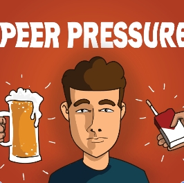
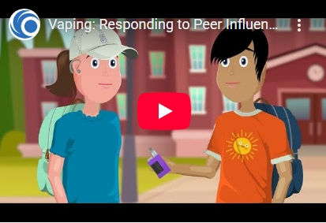

It doesn't always start from personal interest. Sometimes it starts from seeing friends do it or when you see it on social media. Like when you're with your friends and one of them casually just pulls out a vape, and they justify it by saying things like "everyone does it" or "it's not that bad" or "it's not going to kill you". This is where vaping usually begins, in a friend group.
Social media also plays a big role. When you see people your age doing it, it kind of gives you approval in a way. Or when your favorite influencer also does it. This gives approval and basically tells the teenager who is prone to social influence and peer pressure that it's okay and it's common. That's the trap and that is how it gets you.
1 in 3 high school students say they tried vaping because their friends were doing it.
More than 60% of teens who vape say that they saw it on social media first. Platforms like TikTok and Instagram can sugar coat vaping and lead to a dangerous trap.

Around 90% of teens say they feel pressure to fit in with their peers.
Jordan was a 15-year-old high school sophomore — smart, athletic, and well-liked. During lunch one day, a group of friends pulled out a vape pen and passed it around. “Come on, don’t be lame,” someone said with a smirk. Jordan hesitated but gave in. “Just once,” they thought.
What started as a dare became a daily habit. At first, it felt harmless. Everyone was doing it. But soon, Jordan couldn’t go a full class without craving a hit. Concentration dropped, grades slipped, and headaches became normal. Jordan started hiding it from family and lying to teachers. It wasn’t until they ended up in the nurse’s office with chest pain that it hit — this wasn’t just a “trend,” it was an addiction. Jordan is now in recovery and helping others speak out about the truth behind peer pressure and vaping.
Whether you're here to learn, ask questions, or share your story—this space is for you. Fill out the form below to join the conversation.

In this video, real students explain how social influence and peer pressure is a major reason many teens try vaping. Learn to recognize and resist the pressure.